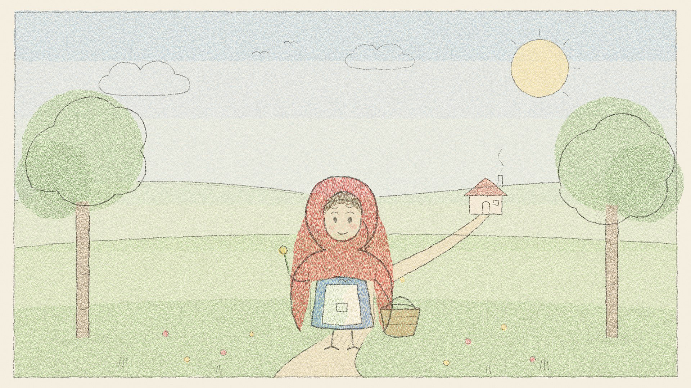

Cô bé quàng khăn đỏ, chuyện kể trước giờ ngủ
Cô bé quàng khăn đỏ, kể lại nhẹ nhàng trước giờ ngủ theo truyện cổ của anh em nhà Grimm. Một con sói ranh mãnh, một bà ngoại thông minh và cô bé học cách đi đúng lối mòn, không ai bị đau cả. Trong tập này: - Đường vào rừng và chiếc bánh mang cho bà - Bà ơi, sao tai bà to thế: cuộc trò chuyện nổi tiếng - Con sói trên mái nhà rơi tõm xuống máng nước Nguồn: Little Red Cap, anh em nhà Grimm, bản dịch của D. L. Ashliman Nhạc: Kevin MacLeod (incompetech.com), CC BY 4.0 Những câu chuyện nhẹ nhàng cho giờ đi ngủ và giờ kể chuyện, được kể chậm rãi bằng một giọng đọc ấm áp. luongnv.com/podcast/stories
Nghe trên Once Upon a Time Show Tải MP3 Lời kể
Truyện này còn có bản: English, Français
Dựa theo Little Red Cap